三種混色模式：Mix / Multiply / Darken
在 encode.frag 裡，keyBlendMode 控制每筆新顏色怎麼和畫面上既有的顏色融合：
| 模式 | keyBlendMode | Shader 邏輯 | 視覺效果 |
|---|---|---|---|
| Mix | 0 | mix(existing, new, alpha) |
新舊色按透明度線性混合，疊越多越飽和 |
| Multiply | 1 | existing * new |
顏色相乘，越疊越深、越沉穩 |
| Darken | 2 | min(existing, new) |
逐通道取較暗值，保留最深的色調 |
以下是橘色＋藍色兩筆交叉，分別用三種混色模式的效果：
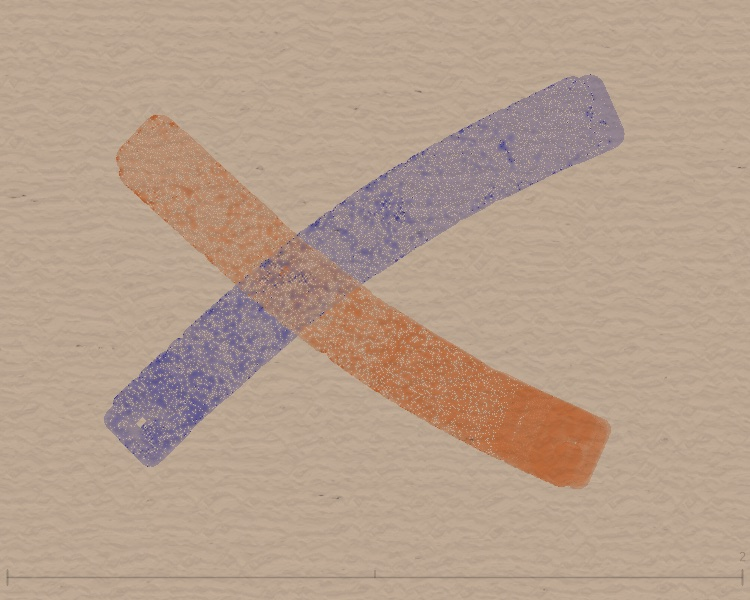
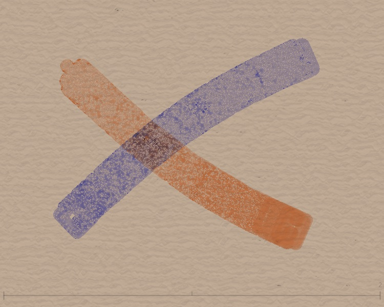
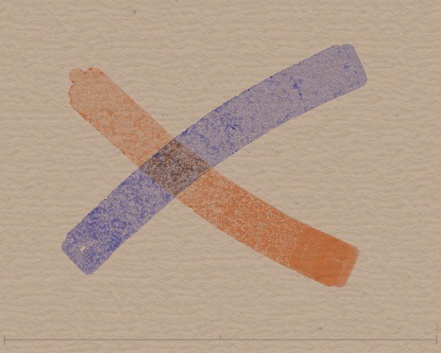
Shader 裡的關鍵程式碼
不同顏色的混色效果比較
同一種混色模式搭配不同顏色會有截然不同的視覺結果。以下是三組顏色的交叉比對：
橘色 + 藍色
紅色 + 青色
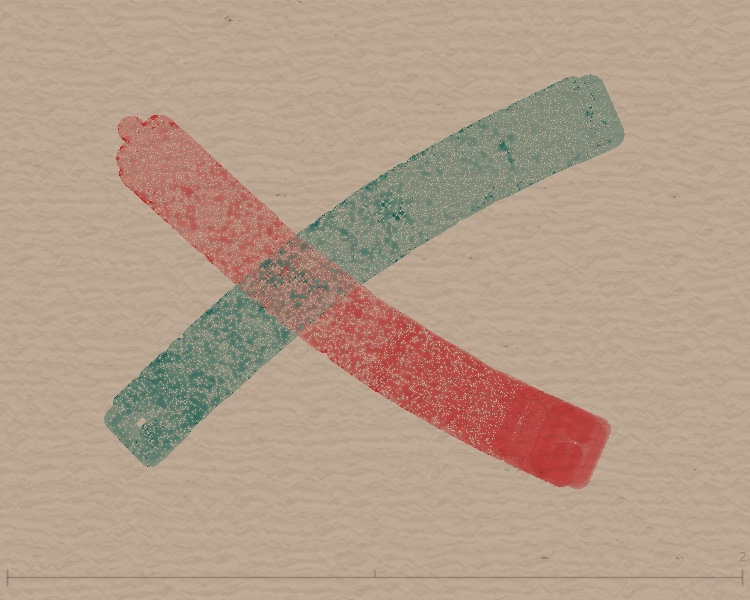
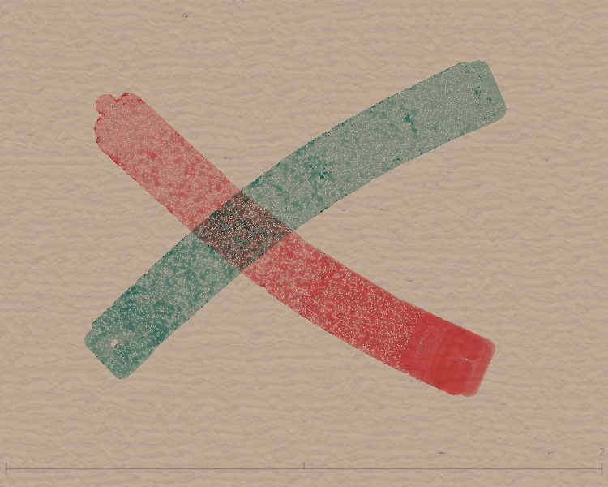
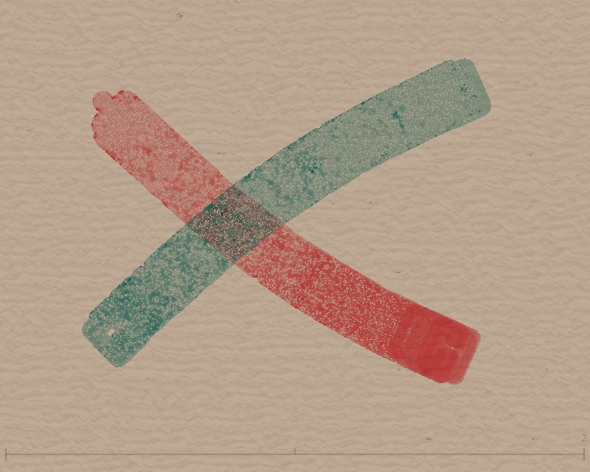
灰色 + 灰色（單色參考）
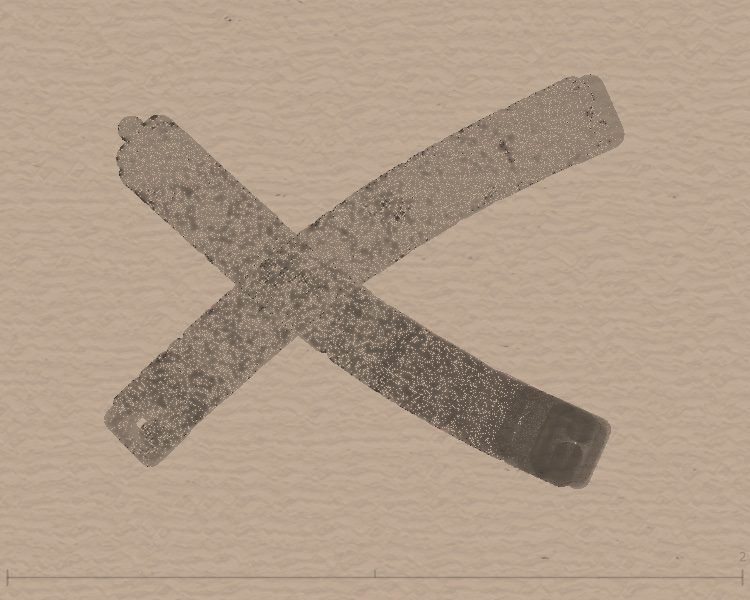
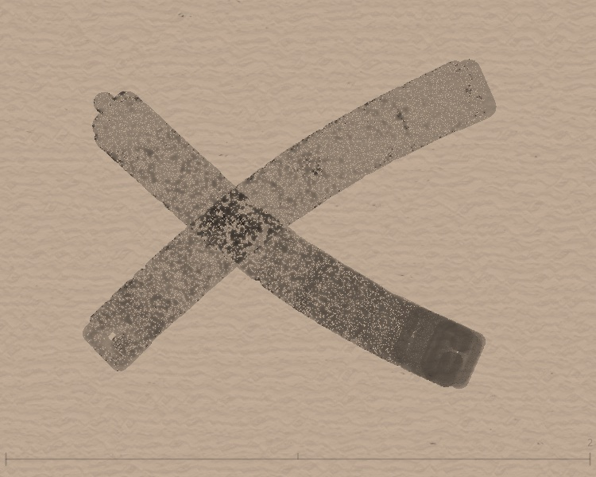
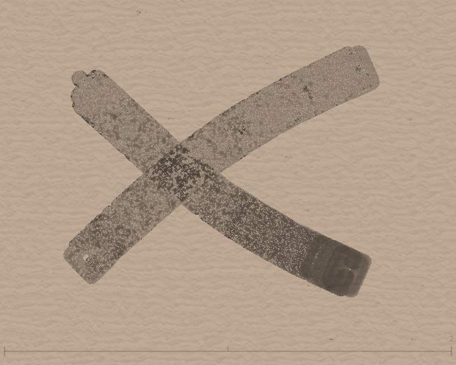
觀察重點
- 互補色（橘藍、紅青）在 Multiply 模式下，交疊處顏色急速變暗——因為互補色的 RGB 值相乘後數字很小
- Darken 會保留兩色中各通道最暗的值，交疊處常出現第三種色相
- 同色（灰灰）可以清楚看出三種模式對「濃度」的不同影響，排除了色彩干擾
為什麼背景色很重要？
encode.frag 裡有一個關鍵判斷——isWhiteBase：
isWhiteBase 判斷
Shader 會檢查當前像素的底色是否「接近白色」。如果是，就走加法合成的路線（適合白底）；如果不是，才用 keyBlendMode 的混色邏輯。
這就是為什麼純白或純黑背景上，Multiply 和 Darken 效果不明顯——白底被判定為 isWhiteBase，走了加法路線，三種模式效果幾乎一樣。
最佳實踐
如果你想看到明顯的 Blend Mode 差異，請選擇中間色調背景，例如：
- 米色
[222, 212, 195]（預設背景） - 暖灰
[180, 160, 140]（本頁截圖用的背景） - 冷灰
[150, 160, 170]
避免使用純白 [255, 255, 255] 或純黑 [0, 0, 0] ——這些背景會讓 Blend Mode 的差異消失。
Path Rotation：扭轉筆觸的方向
pathRotation 控制筆觸在行進過程中，噪波如何擾動方向。數值越大，扭轉越劇烈：
| 模式 | pathRotation | 效果 |
|---|---|---|
| Mode 1 | 0 | 無旋轉，粒子沿著路徑方向直線前進 |
| Mode 2 | 5 ~ 10 | 微幅擾動，像自然書寫的手腕轉動 |
| Mode 3 | 10 ~ 25 | 大幅扭轉，筆觸邊緣散開、形狀更野性 |
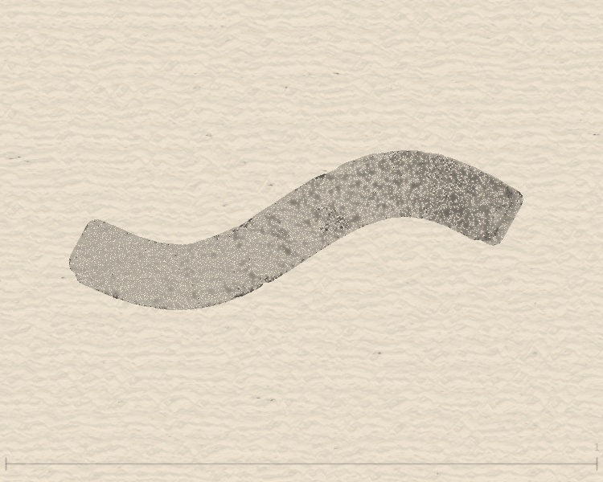
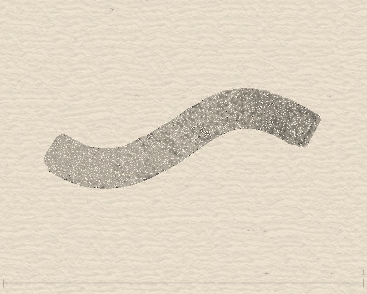
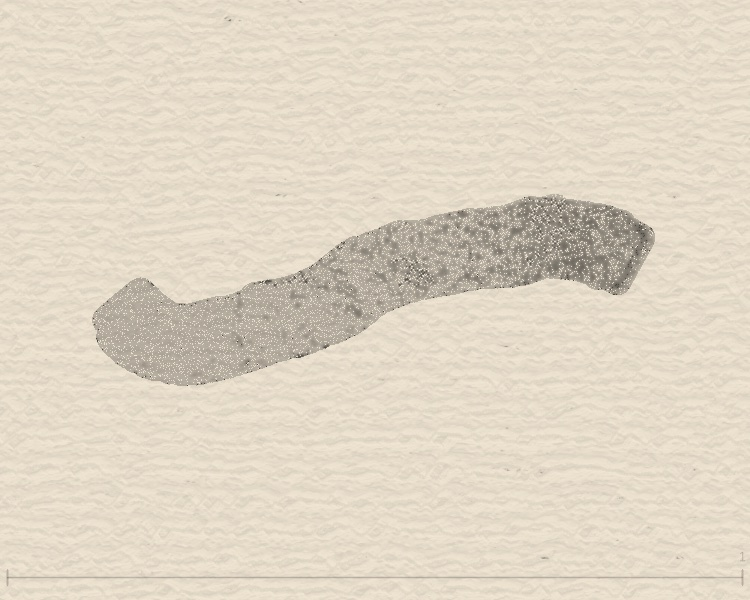
技術原理
在 sketch.js 的繪製迴圈中，每個粒子的噴射方向會加上一個基於 Perlin Noise 的偏移量。pathRotation 是這個偏移量的強度係數：
Mode 1 時 noiseAngle 為零，粒子沿原始方向直行；Mode 3 時噪波大幅偏轉方向，筆觸邊緣像被風吹散。
Flow Effect 八種造型一覽
Flow 力場是 InkField 最強大的後處理特效（詳細原理請見第 6 篇：特效工廠）。這裡展示每種 blendType 在同一組筆觸上的實際效果：
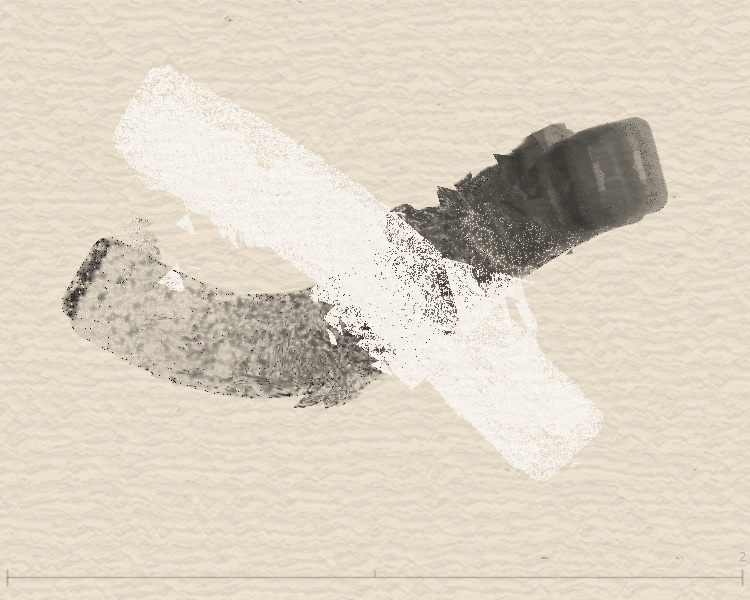
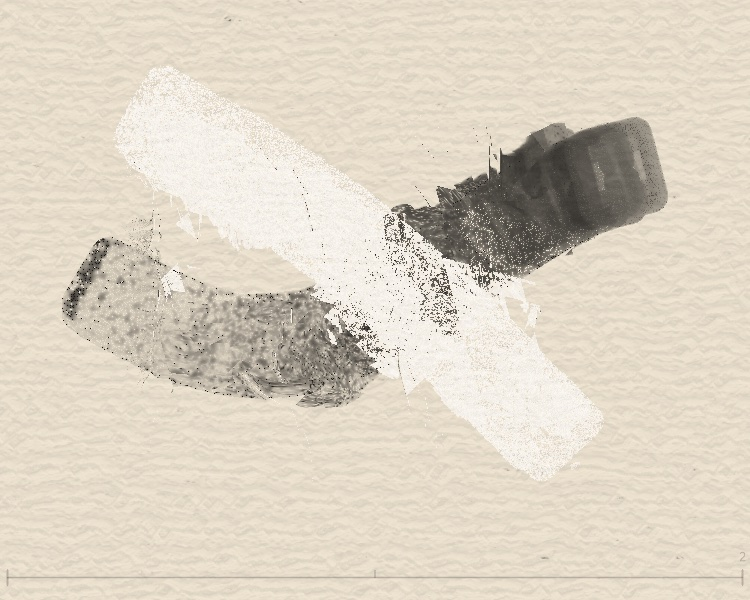
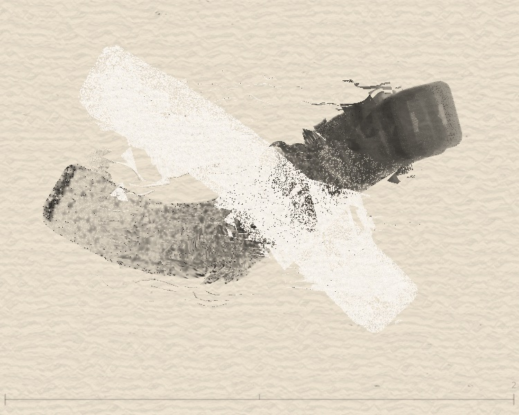
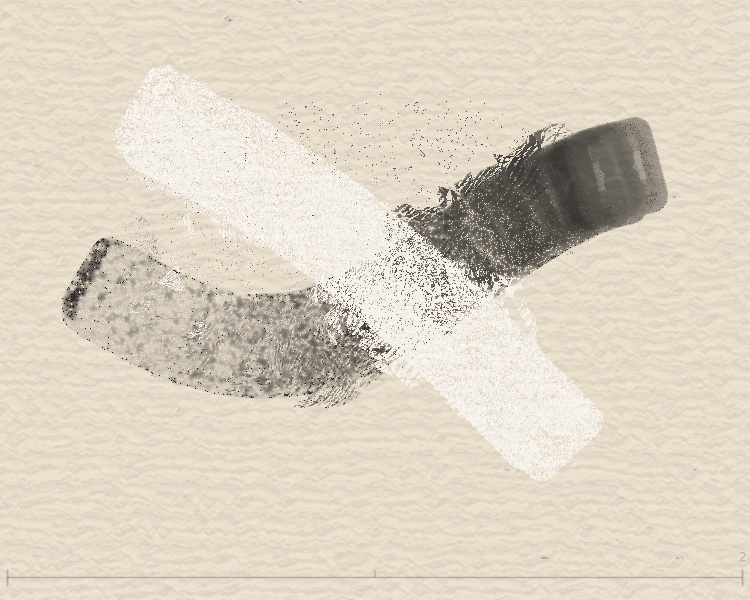
每種造型的特色
| blendType | 名稱 | 位移方式 |
|---|---|---|
| 0 | 基礎 | Simplex Noise 隨機位移，搭配 globalStyle 分區強度調整 |
| 2 | 同心圓 | 兩個隨機圓心產生徑向漣漪，用 mix() 取代基礎噪聲——圓心附近漣漪主導，外圍保留有機噪聲 |
| 3 | 縱向 | 多層 sin/cos/tan 組合，產生垂直紋路 |
| 4 | 橫向 | 和縱向相似但翻轉 90°，產生水平紋路 |
| 5 | 龜裂花紋 | 雙層 Voronoi/cellular 噪聲驅動，cell 邊界處產生強位移形成龜裂/碎裂紋理，cell 內部保留噪聲 |
| 6 | 馬賽克碎片 | 畫面切成隨機大小的格子，每格獨立隨機偏移——像打碎的磁磚各自位移，格線邊界清晰 |
| 7 | 漩渦 | 兩個渦心從原始座標計算極座標旋轉，Gaussian 衰減——靠近渦心漩渦主導，遠離渦心過渡到噪聲 |
| 8 | 細胞 | Voronoi 細胞紋路＋Simplex 擾動，像顯微鏡下的組織 |
觀察重點
所有圖片使用相同的兩筆（黑色＋白色）作為基礎，只改變 Flow 的 blendType。注意每種模式如何把同一組筆觸變成完全不同的視覺效果——這就是 Flow 力場的威力。
Last Stroke Only：只影響最後一筆
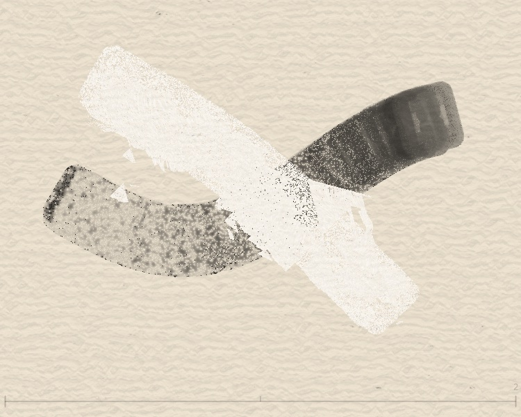
技術實作
flowEffectLastStrokeOnly 為 true 時，flow.frag 會利用 flowEffectStrokeBounds（最後一筆的矩形邊界）來限制 Flow 效果的作用範圍。只有落在這個邊界內的像素才會被位移。
何時使用？
- OFF：適合一次性的全畫面效果——畫完所有筆觸，最後統一套用 Flow
- ON：適合逐筆控制——每畫一筆就套用 Flow，讓每筆有獨立的力場效果，同時保護之前的筆觸不被破壞